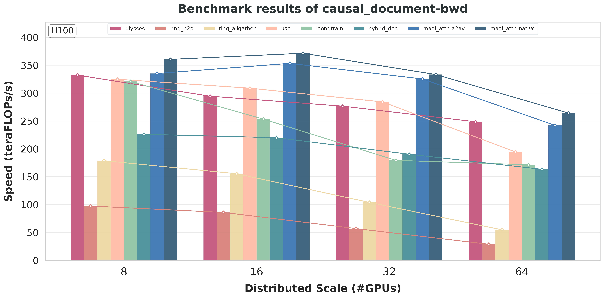
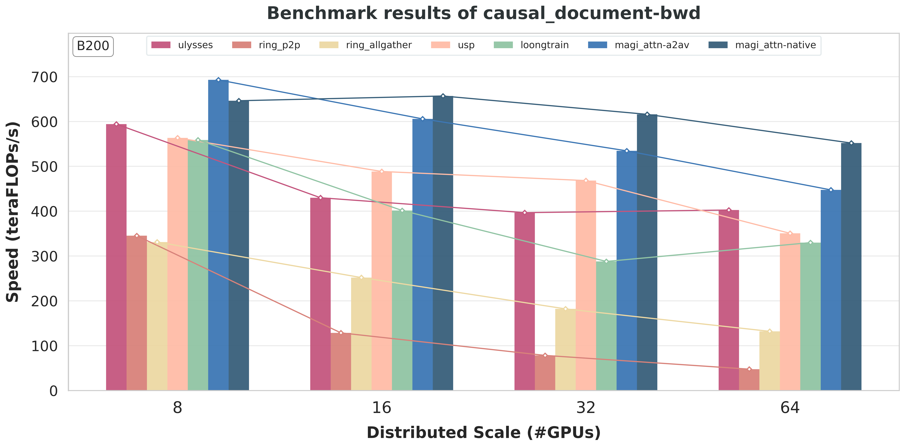

支持原生 Group Collective#
引言#
随着 MagiAttention-v1.1.0 的发布，我们很高兴地宣布支持用于节点内和节点间通信的原生 group collective CUDA 内核，这基于 DeepEP [Zhao et al., 2025] 的出色工作。
与原始的 AlltoAll-v 实现 相比，这种新方法：
通过将预处理/后处理融合到通信内核本身中，消除了额外的 D2D 拷贝；
通过允许单个 send / recv 缓冲区发送到多个对端 / 从多个对端归约，支持原生的 "cast" / "reduce" 语义；
通过对
RDMA传输进行去重并转移到NVLink，降低了低带宽RDMA上的通信开销，从而显著提高了通信效率和可扩展性，特别是对于跨节点间和节点内对端的大型分层 CP 组。
用户接口#
安装#
安装支持原生 group collective 的 MagiAttention 非常简单。您可以按照 安装指南 中的标准安装流程操作，原生 group collective 内核将默认包含并构建，并会自动考虑您特定的 GPU 架构和 CUDA 版本。
但是，要启用节点间功能，您需要确保在裸金属主机上正确设置了 IBGDA，这是在 cp_size > 8 时使用原生 group collective 内核作为通信后端的前提条件。请参阅 安装指南 了解如何启用 IBGDA 并验证其功能的详细说明。
启用#
要在 MagiAttention 中启用原生 group collective 内核，您只需设置环境变量 MAGI_ATTENTION_NATIVE_GRPCOLL=1。
API#
在 MagiAttention 本身中，您完全不需要关心底层的通信内核，但我们会提供低级 API，供希望直接利用 group collective 内核来处理涉及复杂通信模式场景的用户使用。
这是因为我们相信，group collective 原语足够通用，可以覆盖所有常见的通信模式，因此可以在现代分布式训练场景中被广泛使用并扩展到注意力机制之外。
待处理
敬请期待即将发布的 group collective 内核低级 API，它将在不久的将来推出。
实现#
AlltoAll-v 实现的局限性#
最初，由于没有现有的通信内核支持 group collective，我们在 AlltoAll-v 之上实现了 GroupCast 和 GroupReduce 作为原型，在前向和反向传播中实现了零冗余通信（见下方 图 60）。

图 60 基于 AlltoAll-v 实现的 GroupCast/GroupReduce 原语示意图，以实现零冗余，使用带有最后一个全局块的 varlen block-causal 掩码展示。（a）在前向和反向传播中，GroupCast 为 \(\mathrm{KV}\) send/receive 缓冲区构建传输表，调用 AlltoAll-v，并使用自定义的 Range-Gather 内核进行预处理/后处理。（b）在反向传播中，GroupReduce 通过 AlltoAll-v 聚合部分 \(\mathrm{dKV}\)，使用 Range-Gather 进行预处理，使用 Range-Scatter-Reduce 进行后处理。#
然而，这种设计引入了额外的预处理/后处理：GroupCast 必须为 AlltoAll-v 重新排列输入并恢复输出（Range-Gather），GroupReduce 还需进一步归约输出（Range-Scatter-Reduce）。即使使用了优化的 Triton 内核，这些步骤仍会增加不可忽略的 D2D 开销，可能影响端到端性能。
除了 D2D 开销之外，AlltoAll-v 每个对端对仅允许一个 send/recv 缓冲区对，且不原生支持 "cast" 语义。因此，将张量从一个 rank 发送到大小为 \(m\) 的对端子集需要分配 \(m\) 个独立的发送缓冲区并独立传输，即使数据完全相同。这种重复不仅导致更大的中间内存使用，而且造成了大量的通信开销，尤其当 CP 组通过 RDMA 跨节点时，其带宽远低于节点内 NVLink，成为**cp_size 扩展时的关键瓶颈**。
与 DeepEP Dispatch/Combine 的相似性#
几乎在同一时间，DeepEP 团队发布了他们的工作 [Zhao et al., 2025]，实现了针对专家并行（EP）场景的 Dispatch / Combine 通信原语的原生内核实现，替代了具有类似预处理/后处理开销和 RDMA 传输重复问题的传统基于 AlltoAll-v 的实现。
受其工作启发，我们分别利用与 DeepEP 的 Dispatch / Combine 相同的底层内核设计实现了原生 GroupCast / GroupReduce，并将其扩展用于特定的注意力通信模式及更广泛的场景。
原生 Group Cast 的内核设计#
具体来说，对于 GroupCast，我们在 seqlen 维度上将 input 缓冲区逻辑分割为若干 input_splits，每个分片包含分片大小以及名为 dst_indices 的目标对端列表。
对于每个 input_split，一个 sender SM（作为生产者）将通过 TMA 从全局内存加载到共享内存一次，并分配一个 warp 通过 NVLink 或 RDMA 将其发送到每个目标对端的 recv 缓冲区。
在接收端，每个 receiver SM（作为消费者）将等待其 recv 缓冲区被一个唯一的 sender 填充，然后分配一个 warp 加载到共享内存并通过 TMA 存储到 output 缓冲区中对应的 output_split，由所有 output_splits 的源对端列表（名为 src_index）指示。
原生 Group Reduce 的内核设计#
对于 GroupReduce，内核设计与 GroupCast 类似，但在接收端增加了一个归约步骤。
首先，一个 sender SM（作为生产者）将通过 TMA 从全局内存加载其对应的一个 input_splits 到共享内存，并分配一个 warp 通过 NVLink 或 RDMA 将其发送到要归约到的唯一目标对端的 recv 缓冲区，由所有 input_splits 的目标对端列表（名为 dst_index）指示。
然后在接收端，每个 receiver SM（作为消费者）将等待其 recv 缓冲区被所有需要归约到同一 output_split 的 senders 填充，由每个 output_split 的源对端列表（名为 src_indices）指示。
然后它分配一个 warp 加载到寄存器中，对来自多个源对端的接收到的部分结果执行归约（例如 sum），再将归约结果（先到共享内存缓冲区，然后）通过 TMA 存储到 output 缓冲区中对应的 output_split。
RDMA 传输去重#
上述内核设计大大简化了实际的详细数据传输流程，实际流程涉及复杂的 warp-specialized 调度、多级 producer-consumer 对和多范围的 fence / synchronization，以确保正确的内存可见性并支持 arrive-release 信号量信令。但为了解释 RDMA 传输去重的优化，我们仍需深入一些细节。
遵循 DeepEP 的 Dispatch / Combine 在其所谓 normal 模式下的原始内核设计，跨节点间和节点内对端的通信对于 GroupCast 和 GroupReduce 均以 two-stage 方式执行：
对于
GroupCast，如果某个input_split需要 cast 到同一节点内的 \(k\) 个节点间目标对端：senderSM（作为生产者）不会直接分配 \(k\) 个 warp 通过RDMA逐一点对点发送，而是仅分配一个 warp（称为RDMA sender）从其RDMA send buffer发送到目标节点内与其具有相同 local rank id 的对端的RDMA recv buffer。相应地，该对端上的一个 warp（称为
RDMA2NVL transferer）将等待其RDMA recv buffer被RDMA sender填充（作为消费者），然后通过NVLink将其重新传输（作为生产者）到那 \(k\) 个实际目标对端的NVL recv buffers。它们各自的某个 warp（称为
NVL receiver）最终存储到其对应的output_split（作为消费者），从而通过在目标节点中转移到NVLink传输，将RDMA传输去重 \(k\) 倍。
对于
GroupReduce，如果某个output_split需要从同一节点内的 \(k\) 个节点间源对端归约：那 \(k\) 个
senderSM（作为生产者）不会直接分配一个 warp 通过RDMA点对点发送各自的input_split，而是各自仅分配一个 warp（称为NVL sender）通过NVLink发送到同一源节点内与目标对端具有相同 local rank id 的对端的NVL recv buffer。相应地，该对端上的一个 warp（称为
NVL2RDMA transferer）将等待其NVL recv buffer被所有那些NVL senders填充（作为消费者），然后对这些部分结果执行本地归约，再通过RDMA将本地归约结果重新传输（作为生产者）到该目标对端的RDMA recv buffer。该目标对端上的某个 warp（称为
RDMA receiver/reducer）最终对从多个源节点接收到的所有本地归约结果执行全局归约，并将全局归约结果存储到对应的output_split（作为消费者），从而通过在每个源节点中转移到NVLink传输，将RDMA传输减少 \(k\) 倍。
其他特性和优化#
除了上述核心设计外，我们还在原生 group collective 内核中实现了若干其他特性和优化，其中一些是注意力专用的，另一些则适用于通用场景，包括但不限于：
支持多种数据类型、通信数据类型和归约数据类型：我们将数据类型扩展到覆盖
{float16, float32, float64}（DeepEP 仅支持bfloat16），其comm_dtype和reduce_dtype可分别配置（例如，bfloat16输入使用float32归约，或float32输入使用bfloat16传输），以提高归约精度或传输效率。支持多种归约操作和 lse 传输：我们将归约操作扩展到覆盖
{sum, avg, lse}（DeepEP 仅支持sum），其中lse（log-sum-exp）归约是Flash-Attention[Dao et al., 2022] 引入的现代基于 softmax 的注意力的特定归约模式。相应地，我们支持将input/output lse与input/output data一起传输，以在内核内执行lse归约。支持累积输出缓冲区并完全避免 GPU-CPU 同步：与 EP 不同，接收缓冲区的 seqlen 可以预先计算并用于预分配缓冲区，因此我们可以传入输出缓冲区，内核将直接归约到其中，从而在静态注意力场景中完全避免 GPU-CPU 同步（但可能不适用于稀疏注意力等动态场景）。
支持灵活的 cp size：对于节点内 group collective，我们支持从 \(1\) 到 \(8\) 的任意
cp_size，而非 DeepEP 中仅支持cp_size=8，这对不同的训练场景更加灵活。然而，对于节点间 group collective，节点内大小目前仍只能为 \(8\)，但节点间大小支持 \(\{2,4,8,16,32\}\)。支持多组数据的打包传输：我们支持将不同组的数据（例如注意力中的 \(\mathrm{K}\) 和 \(\mathrm{V}\)）共享相同的通信模式一起传输，无需为每组数据启动单独的内核，也无需手动将它们打包到单个缓冲区然后在传输后解包，只需传入多组输入和输出缓冲区对以及一组元信息（如
input_splits和output_splits）即可。
实验#
我们在下方展示了在 H100 和 B200 GPU 上最常用的 varlen causal 掩码的代表性分布式级别基准测试，展示了 MagiAttention 在 AlltoAll-v 和原生后端下相对于其他领先 CP 策略的性能和可扩展性，特别突出了当 cp_size > 8 且持续扩展时原生 group collective 内核的性能提升。
有关详细的基准测试设置和更多基准测试结果，请参阅单独的 博客文章。
内核级别#
待处理
敬请期待即将发布的内核级别基准测试，它将提供原生 group collective 内核带来的性能改进的更细粒度分析，包括详细的性能分析和通信开销的分解。
分布式级别#
H100#

图 61 （a）前向传播#
{kind=link}

图 62 （b）反向传播#
在 H100 上对 varlen causal 掩码进行 MagiAttention 性能和可扩展性与基线的基准测试。
B200#

图 63 （a）前向传播#
{kind=link}

图 64 （b）反向传播#
在 B200 上对 varlen causal 掩码进行 MagiAttention 性能和可扩展性与基线的基准测试。
引用#
如果您发现 MagiAttention 对您的研究有用，请引用：
@misc{magiattention2025,
title={MagiAttention: A Distributed Attention Towards Linear Scalability for Ultra-Long Context, Heterogeneous Mask Training},
author={Zewei, Tao and Yunpeng, Huang},
year={2025},
howpublished={\url{https://github.com/SandAI-org/MagiAttention/}},
}